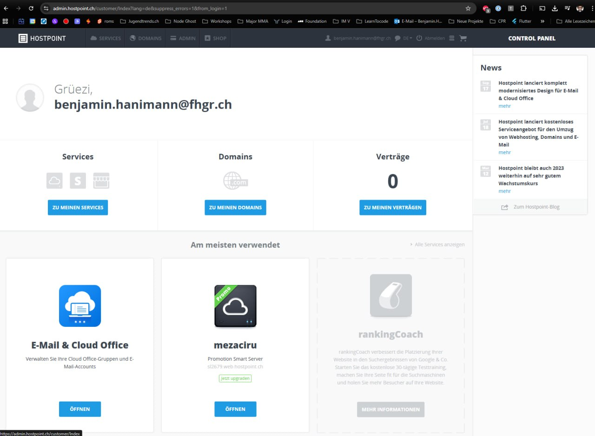
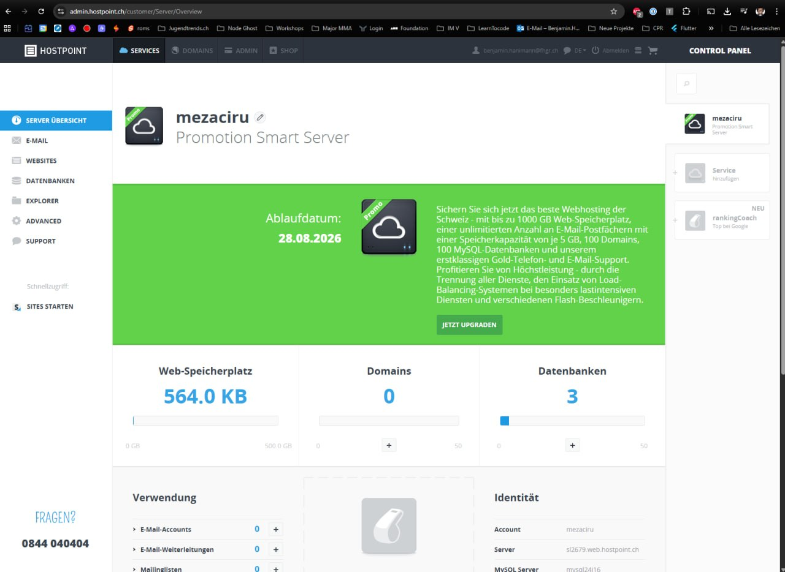
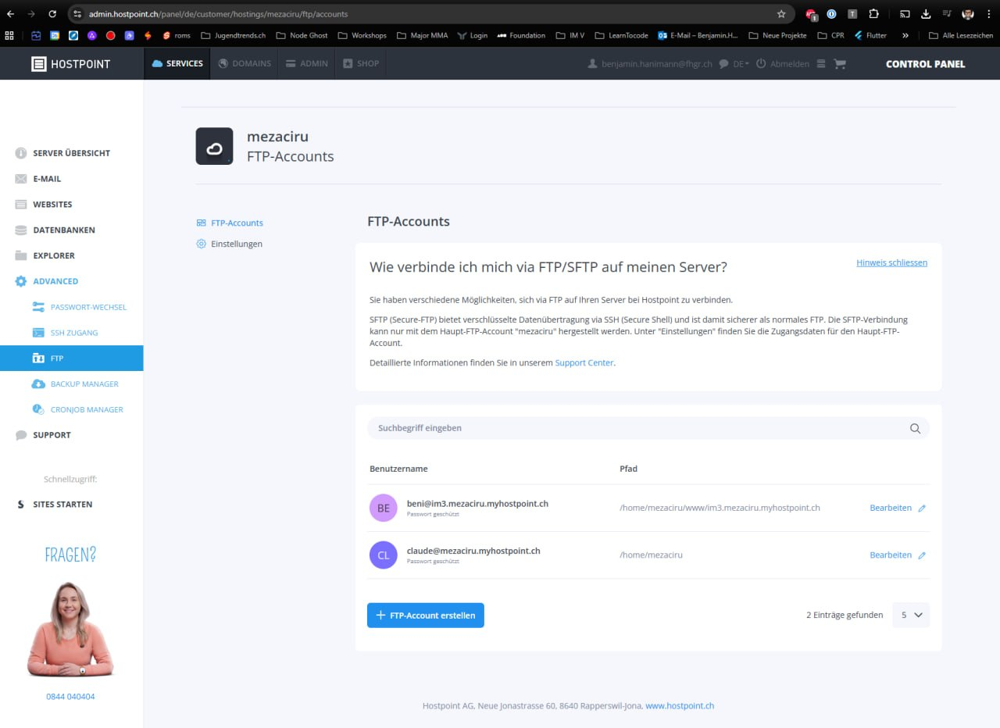

Was am Ende funktionieren muss
- VS Code ist installiert
- SFTP in VS Code ist korrekt konfiguriert
- GitHub + GitHub Desktop sind eingerichtet
- Hostpoint Credentials sind getestet
- Projektworkflow ist sauber und nachvollziehbar
Ziel: Jede Person kann heute lokal entwickeln, sauber versionieren und zuverlässig auf Hosting deployen.
Sauber arbeiten ist Teil der Bewertung.
Nicht nur Resultat zählt, sondern auch: Struktur, Versionierung und Deploy-Hygiene.
VS Code muss installiert sein. Danach Erweiterungen sauber nachziehen.
Ich nehme die Studierenden hier bewusst an die Hand – Schritt für Schritt im richtigen Projektordner.
CMD + SHIFT + P (Mac) / CTRL + SHIFT + P (Windows).SFTP: Config und ausführen..vscode mit der Datei sftp.json.{
"name": "hostpoint-main",
"host": "replace-this-hostname",
"protocol": "ftp",
"port": 21,
"username": "replace-this-username",
"password": "replace-this-password",
"remotePath": "/",
"uploadOnSave": true,
"ignore": [
".vscode",
".git"
]
}FHGR Mail für Education Benefits nutzen, danach in GitHub Desktop ein neues Projekt sauber aufsetzen.
↗ GitHub Education
↗ GitHub Desktop
im1-portfolio-max-muster)..DS_Store
config.php
.vscode
.env
node_modulesfeat:, fix:, chore:).Login meist mit vorname.nachname@stud.fhgr.ch, danach FTP Daten in sftp.json eintragen.



Damit niemand bei Shortcuts oder Menüs hängen bleibt: beide Wege klar nebeneinander.
CMD + SHIFT + PCMD + SCMD + SHIFT + FSFTP: Sync Local -> RemoteCTRL + SHIFT + PCTRL + SCTRL + SHIFT + FSFTP: Sync Local -> RemoteDiesen Loop pro Arbeitsblock sauber fahren: